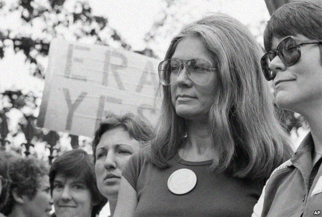

You've Come a Long Way,Baby
The 1950’s had a damaging effect on women’s self esteem.
“Newspaper published ads for jobs on different pages, segregated by gender”
Women and men were paid unequally because of their gender.
Young girl were encouraged to respect their dad and “ridicule” their mothers, Advertisement didn't help but instead put a heavy pressure on families and women as a whole. However after the women’s movement which happened on August 27 1970 advertisement started to shift towards female empowerment.
That day 50,000 marched down New York’s fifth avenue and claimed for legal abortion, universal childcare and equal pay” You’ve come a long way baby” is an example of an advertising slogan that portrayed women as strong and powerful. It was launched by the Philip Morris company in 1968 for Virginia slims, a cigarette brand.
Young girl were encouraged to respect their dad and “ridicule” their mothers, Advertisement didn't help but instead put a heavy pressure on families and women as a whole. However after the women’s movement which happened on August 27 1970 advertisement started to shift towards female empowerment.
That day 50,000 marched down New York’s fifth avenue and claimed for legal abortion, universal childcare and equal pay” You’ve come a long way baby” is an example of an advertising slogan that portrayed women as strong and powerful. It was launched by the Philip Morris company in 1968 for Virginia slims, a cigarette brand.
The campaign’s mission was to not only sell the product but to also empower women.
It mirrored the country’s mainstream awareness of the women’s right movement led by feminist gloria Steinem, Bella Abzug, Betty Friedan and many other activists”
Their ads portrayed women on the go, confident and beautiful which was in complete opposition to the image of the American women of the 1950’s.
